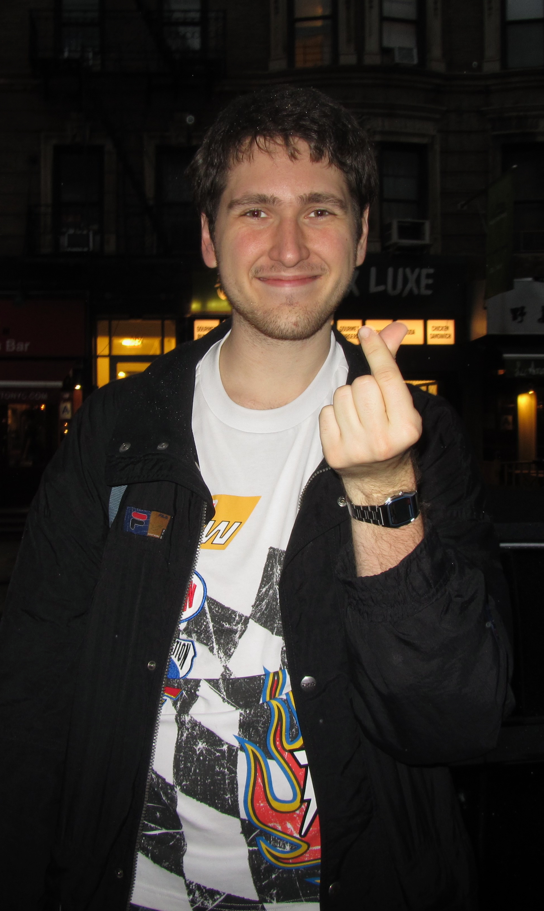

Photography Projects
Photography is probably my favorite hobby, and something I enjoy spending a lot of my time on. These are just some of the snapshots I took while traveling across the US, and back home in Bosnia and Herzegovina.

I am a computer science bachelor with a concentration in Human Computer Interaction.
My main focus is on building and researching interactive digital experiences that benefit society, and I am particularly interested in games, augmented reality, and computational media.
My interests sit at the intersection of computer science, human-computer interaction, games, and interactive media. I am interested in how people interact with technology and how interactive systems can be used to communicate ideas, tell stories, and create meaningful experiences.
I worked as a narrative designer and researcher on Peaceland, a prosocial game project exploring interactive storytelling and the ways games can engage players with social issues.
GAME RESEARCHMy academic focus is Human Computer Interaction, with particular interest in games, interactive systems, computational media, and designing experiences around the way people actually use technology.
HCII am developing an augmented reality project centered around stećak monuments in Bosnia and Herzegovina. The project explores spatial interaction, digital cultural heritage, and ways of connecting physical places with interactive digital experiences.
AR / HCII am particularly interested in computational media and the space where programming, storytelling, games, design, and human interaction overlap.
COMPUTATIONAL MEDIAPlaying video games inspired me to pursue computer science. Here's a game I created — feel free to try it out.
The game is running inside a movable window. Grab the blue title bar and move it around the desktop.
Here are some of my graphic design projects. Click below to explore more!
CrowdCompass is a fictional startup that was a midterm project for a Digital Media Studies class I took my sophomore year of college. I created Figma mockups and designed the experience around the needs of its users.